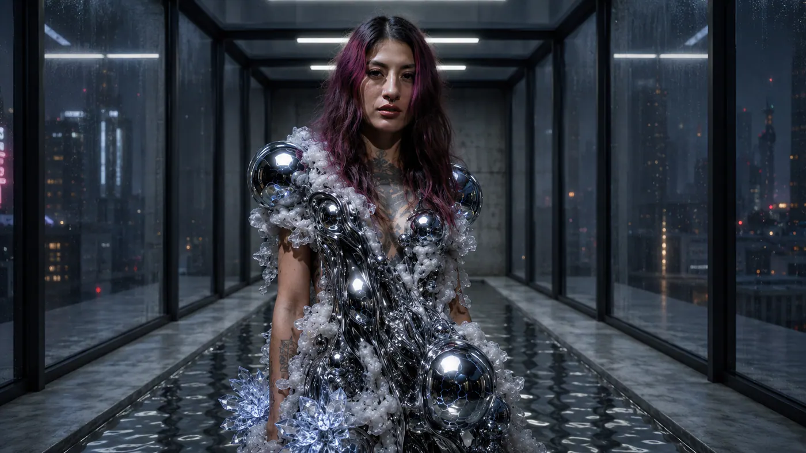

Fashion After Fabric / Parallel Vision
Amatista(444)
04 / Artist Study
Liquid Memory
The body becomes a surface in transition. FLESH ZERO surrounds Amatista(444) with material, atmosphere and protection until image and garment collapse into one system.
A body system.

Material Study / FLESH ZERO
Surface Memory
A close material study from the FLESH ZERO collection. Chrome pressure, mineral surface and body protection are treated as one unstable layer.
Fashion After Fabric Film
Amatista(444) / Body Transmission
Material Archive / Amatista(444)
Material Studies
A sequence of body transmissions from the Fashion After Fabric archive: chrome, water, crystal and atmosphere moving through the same surface.
01 / 06